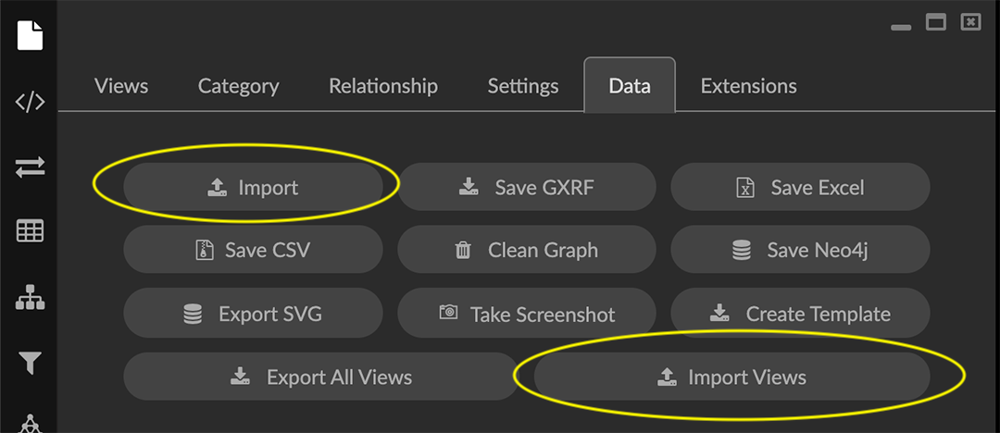
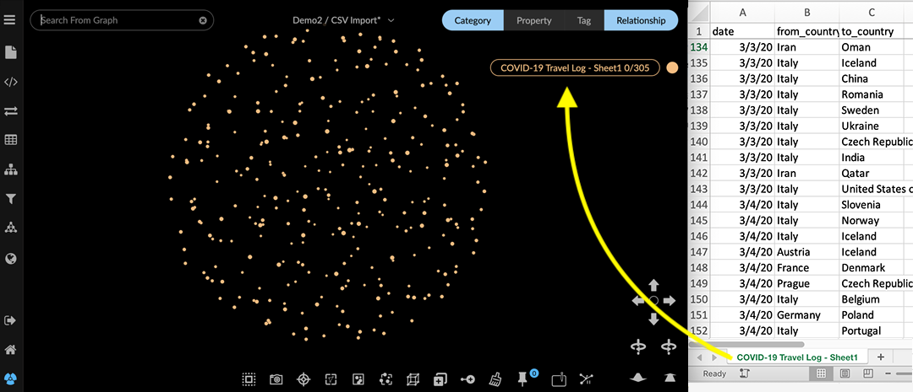
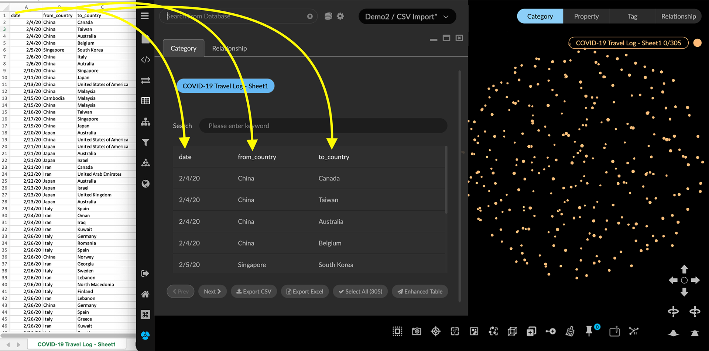
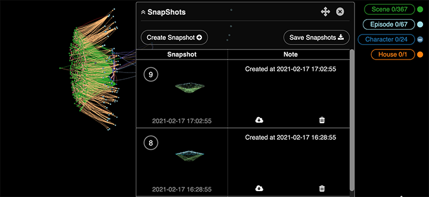
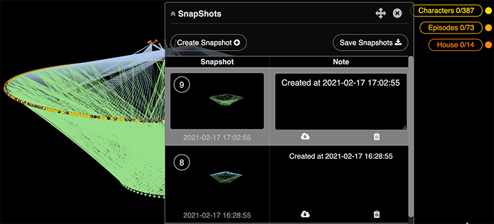

Import Data by Drag and Drop You can import data in .CSV, .JSON, GraphXR’s .graphxr and .graphxrsnapshots, and many other data formats by drag and drop. Simply locate the file on your system, then drag and drop it anywhere in the project graph space. In the Project panel and Data tab you can also click Import or Import Views to navigate to a file and import the data.  Be sure to save any current view before you import data. To do this go to the project view menu and either Save your current view, or Save As a new view. If you do unintentionally import data to an existing view, you can immediately use Save As to create a new view. Importing flat files by drag and drop When you import data that has no defined graph schema, such as a flat .CSV file, each row is imported as a node of a single default category. Keep in mind that data from CSV , Excel, or .JSON files is added to any data already in the project space. To create a new empty view, save your current view, and then select New from the project view menu. This clears the existing data and opens a new empty Unsaved View. For example, the following spreadsheet can be dropped onto the project space. It’s a travel log with three columns headed date, from_country, and to_country . A node representing a single travel event is created for each row. All the nodes are assigned a single category labeled with the name of the file (i.e. COVID-19 Travel Log - Sheet1).  The column headings in the file are assigned as property names: date, from_country, and to_country, and property values are transferred for the respective nodes. In the Table panel, you can inspect the imported nodes and their property values.  Starting with unconnected nodes, you can create connected graph data using GraphXR’s navigation, selection, and transformation tools. In particular, the Transform panel provides powerful ways to extract and/or simplify categories, properties, and relationships. Importing graph data views by drag and drop You can simply drag and drop graph data held in a JSON file, CSV or Excel archive, graphxr file, or graphxrsnapshots archive. The categories, relationships, and their properties are included. The data in graphxr files or a graphxrsnapshots archive retain the 3D layout and view perspective it had when it was saved. Keep in mind that data imported from a .graphxr view, .graphxrsnapshots archive, or data View replaces any data already in the project space. Be sure to save (or export) your current view before you import a view. You can: Use the view menu or Views tab to save your view, or Go to the Project panel and Data tab and choose Save GXRF, Save CSV, Save Excel or, if a database is connected to your project, Save Neo4j. Importing Snapshots Once a snapshot archive has been saved, you can simply restore it to your project by drag and drop. To import a snapshot archive: Open a GraphXR project. Locate the .graphxrsnapshots archive file, and drag and drop it on your project’s graph space. The set of snapshots appear in the Snapshots window, and the most recent snapshot is imported to the graph space. Existing data if any is replaced with the most recent snapshot view. You can import any of the snapshots in the archived set as your new starting point. Click the arrow on the left edge of the Snapshots window to expand the archive and locate the snapshot you want.  Click the snapshot’s cloud icon to import it.  When you exit or log out, snapshots are deleted. Before you exit the project space, use Save Snapshots to export a snapshots archive to your local system that you can then import by drag and drop.